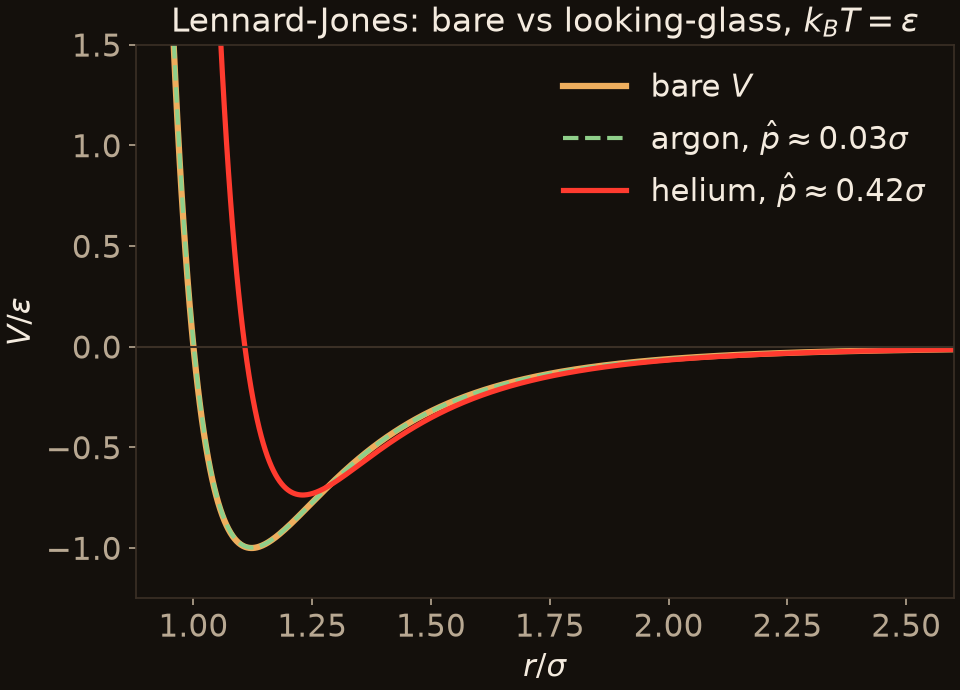

Example 1: Van der Waals
Lennard-Jones: argon vs helium
$$\hat V = \frac{4\varepsilon}{\hat p}\left[\frac{\sigma^{12}}{11}\big(a^{-11}-b^{-11}\big) - \frac{\sigma^{6}}{5}\big(a^{-5}-b^{-5}\big)\right]$$
with segment ends $a, b = r \mp \hat p/2$: the powers integrate exactly.
- Thermal coherence length at $k_BT = \varepsilon$: $\hat p \approx \hbar/\sqrt{mk_BT} = \sigma\,\Lambda^*/2\pi$, where $\Lambda^*$ is the de Boer parameter.
- Argon ($\Lambda^* \approx 0.19$): $\delta\hat V \approx 0.002\,\varepsilon$ at the well bottom. Classical flow is fine.
- Helium ($\Lambda^* \approx 2.6$): $\delta\hat V \approx 0.78\,\varepsilon$; the well rises from $-\varepsilon$ to $-0.74\,\varepsilon$ and moves out. Even the leading term ($0.42\,\varepsilon$) misses half of it.